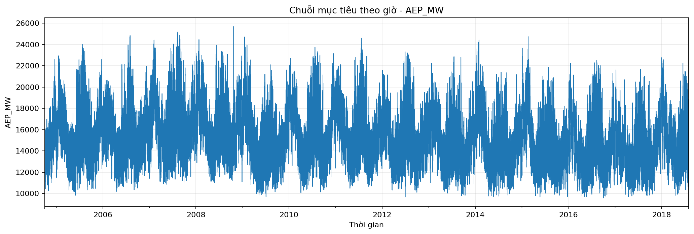
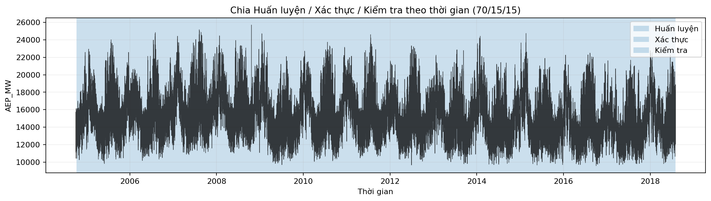
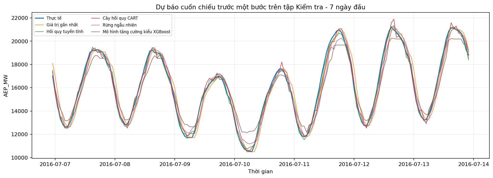
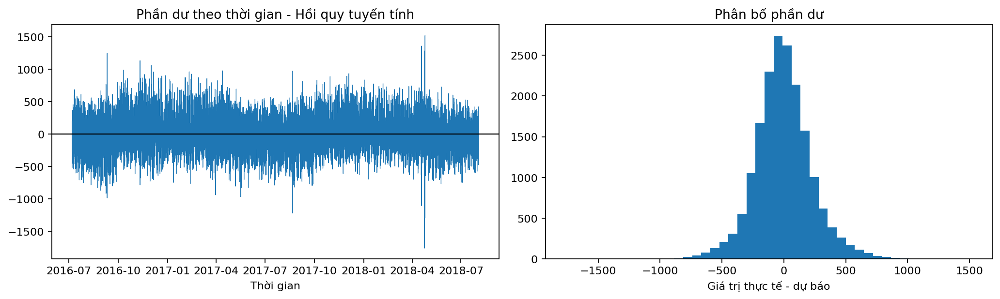
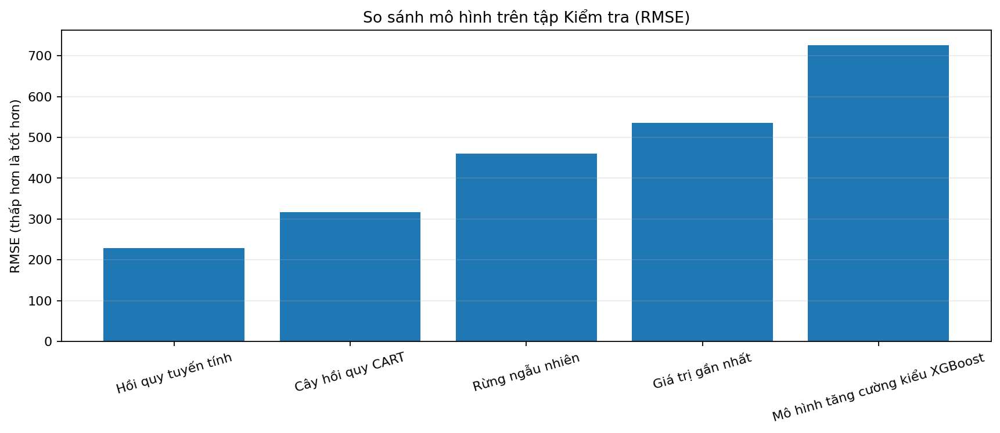
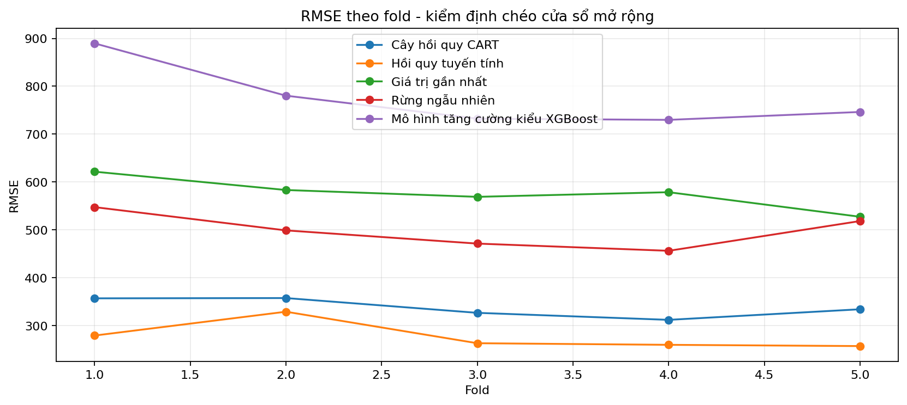
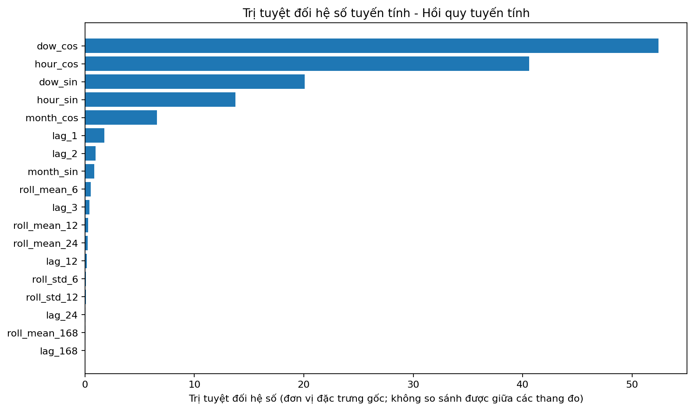
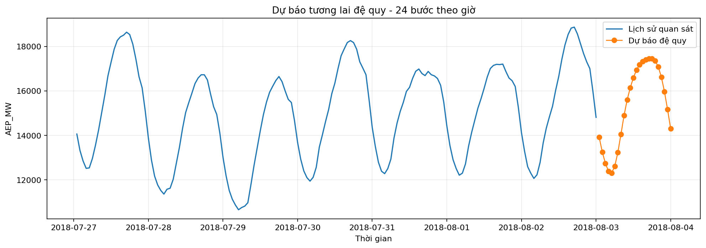
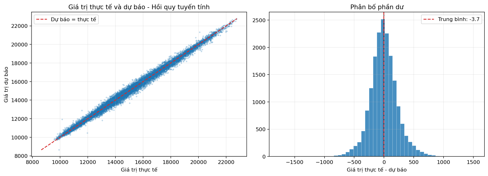
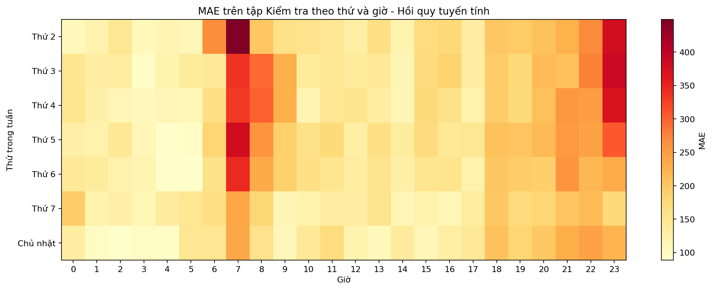

Mã lần chạy: report_fix_20261127
Bộ dữ liệu: AEP_hourly.csv (dữ liệu thật)
Mô hình được chọn: Hồi quy tuyến tính (theo RMSE trên tập xác thực)
Trạng thái lần chạy: Hoàn tất
Lưu ý: Chỉ tính chỉ số trên tập kiểm tra sau khi đã chọn mô hình. Đặc trưng ở tập kiểm tra dùng giao thức dự báo cuốn chiếu trước một bước; giá trị thực tế ở các thời điểm kiểm tra trước đó có thể được dùng để tạo độ trễ cho thời điểm tiếp theo. Giao thức này khác với dự báo 24 giờ từ một mốc cố định.
Lab 03 huấn luyện 5 mô hình tự cài đặt trên dữ liệu AEP_hourly thật. Mô hình được chọn theo RMSE xác thực thấp nhất là Hồi quy tuyến tính (RMSE xác thực=246.14, RMSE kiểm tra=228.49).
C:\Users\Bin\Documents\Lab_TimeSeries\data\raw\AEP_hourly.csvCác dòng đặc trưng được sắp theo mốc thời gian. Tập huấn luyện, tập xác thực và tập kiểm tra là các đoạn thời gian liên tiếp, không xáo trộn.
| Tập dữ liệu | Số dòng | Bắt đầu | Kết thúc | Tỷ lệ mục tiêu |
|---|---|---|---|---|
| Huấn luyện | 84,789 | 2004-10-08 01:00:00 | 2014-06-10 21:00:00 | 70% |
| Xác thực | 18,169 | 2014-06-10 22:00:00 | 2016-07-06 22:00:00 | 15% |
| Kiểm tra | 18,170 | 2016-07-06 23:00:00 | 2018-08-03 00:00:00 | 15% |
[1, 2, 3, 6, 12, 24, 48, 168][6, 12, 24, 168]; phép tính được dịch một mốc thời gian trước khi tổng hợp.Kiểm định chéo cửa sổ mở rộng sử dụng 5 lượt chia chỉ trong tập huấn luyện. Mỗi lượt huấn luyện trên đoạn trước và xác thực trên đoạn kế tiếp. Tập xác thực và tập kiểm tra bên ngoài không tham gia kiểm định chéo.
| Mô hình | RMSE trung bình | Độ lệch chuẩn RMSE | MAE trung bình | R² trung bình |
|---|---|---|---|---|
| Cây hồi quy CART | 337.364 | 19.742 | 254.786 | 0.983 |
| Hồi quy tuyến tính | 277.589 | 29.939 | 199.313 | 0.988 |
| Giá trị gần nhất | 575.926 | 33.729 | 441.614 | 0.950 |
| Rừng ngẫu nhiên | 498.419 | 36.476 | 379.359 | 0.963 |
| Mô hình tăng cường kiểu XGBoost | 775.685 | 66.806 | 585.731 | 0.909 |
| Mô hình | RMSE CV trung bình | RMSE xác thực | MAE kiểm tra | RMSE kiểm tra | MAPE kiểm tra (%) | R² kiểm tra | Thời gian khớp (giây) |
|---|---|---|---|---|---|---|---|
| Giá trị gần nhất | 575.926 | 534.446 | 417.325 | 534.753 | 2.853 | 0.954 | 0.00 |
| Hồi quy tuyến tính | 277.589 | 246.137 | 171.907 | 228.494 | 1.170 | 0.992 | 0.05 |
| Cây hồi quy CART | 337.364 | 322.511 | 244.089 | 316.215 | 1.656 | 0.984 | 4.91 |
| Rừng ngẫu nhiên | 498.419 | 493.904 | 365.590 | 460.137 | 2.532 | 0.966 | 8.04 |
| Mô hình tăng cường kiểu XGBoost | 775.685 | 777.448 | 576.028 | 726.126 | 4.152 | 0.915 | 0.65 |
model_summary.csv.Sau khi đánh giá tập kiểm tra, mô hình tốt nhất theo tập xác thực được khớp lại trên 121,128 quan sát có nhãn đến 2018-08-03 00:00:00, rồi dùng để dự báo đệ quy 24 giờ. Mỗi giá trị dự báo được nối vào lịch sử để tạo độ trễ/cửa sổ trượt cho bước tiếp theo. Không sử dụng giá trị thực tương lai. Đây là mô hình riêng với mô hình khớp trên tập huấn luyện + tập xác thực để chấm điểm tập kiểm tra.
Notebook lưu trữ có một thí nghiệm trước đây dùng các thư viện scikit-learn và XGBoost. Các giá trị được giữ lại để truy xuất nguồn gốc; đây không phải kết quả hiện tại từ mô hình NumPy tự cài đặt và không nên xem là phép so sánh đối chứng tương đương.
Kết quả lưu trữ được ghi riêng tại reports/lab03/legacy/.










notebooks/lab03/Lab03_Visual_Exploration.ipynb từ thư mục gốc của kho mã và chạy lần lượt tất cả ô lệnh.AEP_hourly.csv trong data/raw/, gồm các cột Datetime và AEP_MW, để chạy thí nghiệm trên dữ liệu thật.